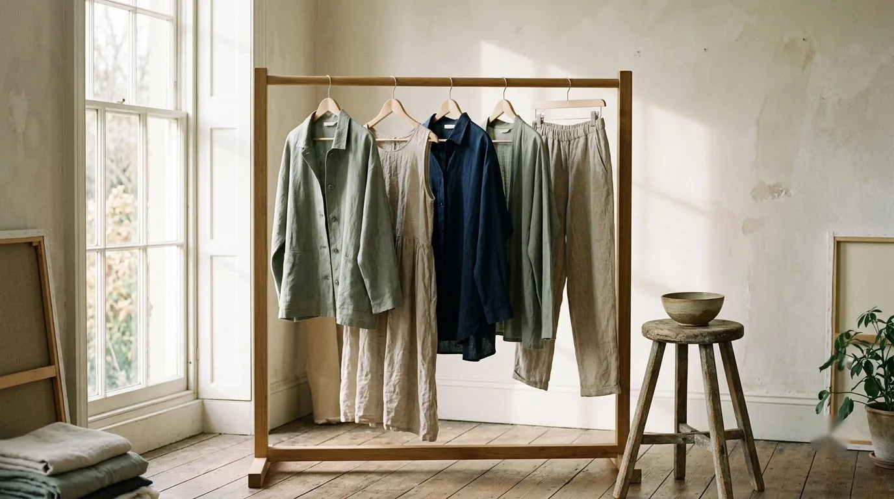

Quiet garments. Enduring cloth.
A considered wardrobe crafted in small runs using rain-fed organic cotton, hand-spun khadi, and natural madder dyes. Made by named artisans, finished with French seams, and cut to be worn for decades.

Pieces shaped around everyday rhythm.
Wool Wrap Coat
Hand-loomed Himalayan wool in an unlined, dropped-shoulder silhouette with deep welt pockets.
$380View details →DressesWashed Linen Slip Dress
Medium-weight European flax with French binding, adjustable straps, and side seam vents.
$220View details →TopsIndigo Twill Overshirt
Botanical indigo dyed over organic twill cotton, horn buttons, and relaxed utility chest pockets.
$195View details →A slower pace of garment making.
We produce only two capsules each year. Every yard of fabric is woven by handloom weavers in Maheshwar and Kutch, honoring centuries of textile knowledge without excess inventory.
Read the craft storyThe Autumn / Winter Edition
A digital journal of silhouettes, natural dye archives, and textile origins. Sent straight to your inbox.